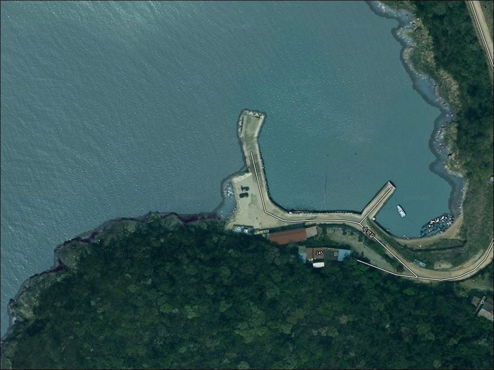
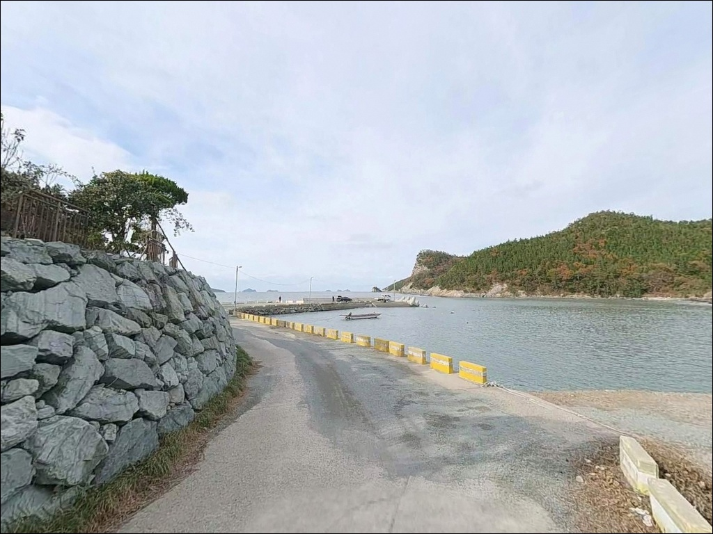
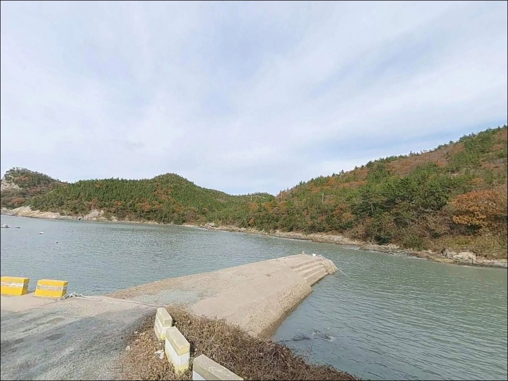
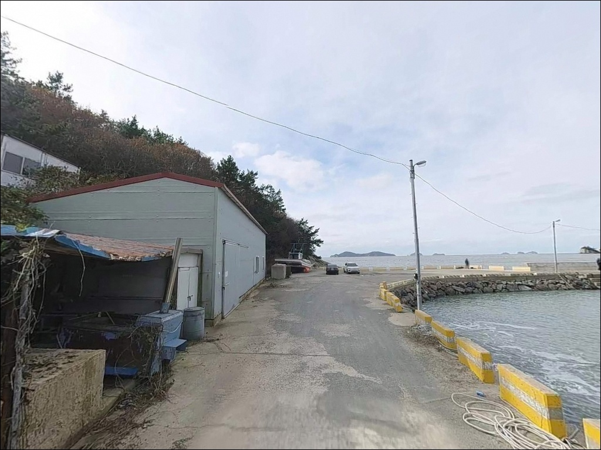
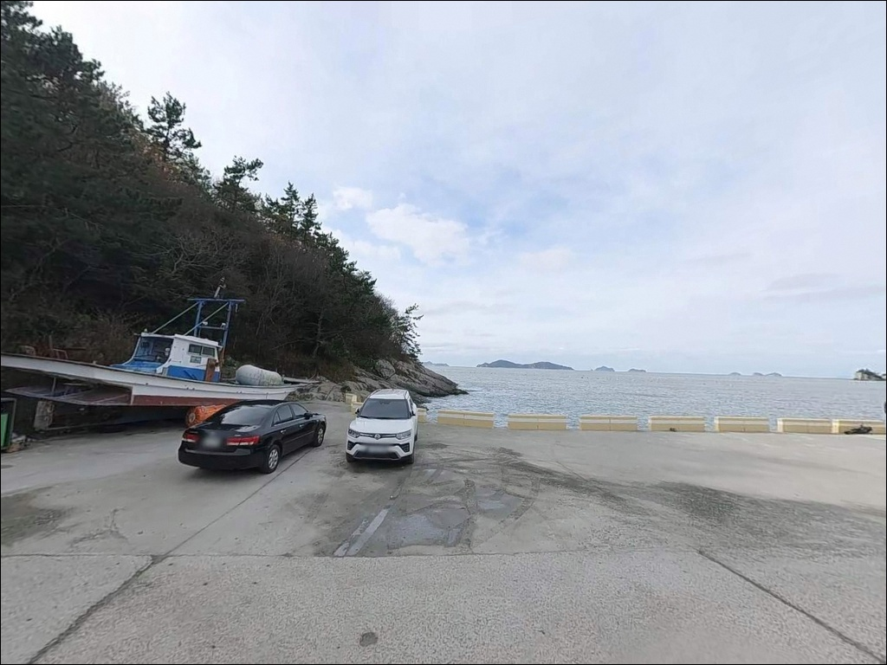
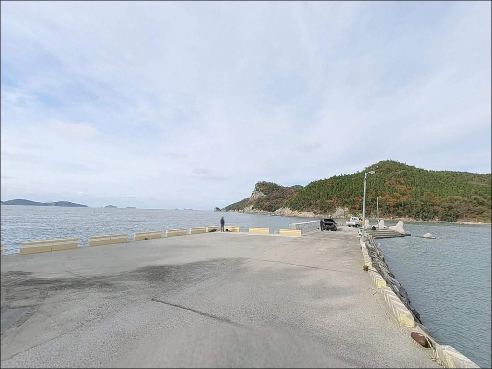
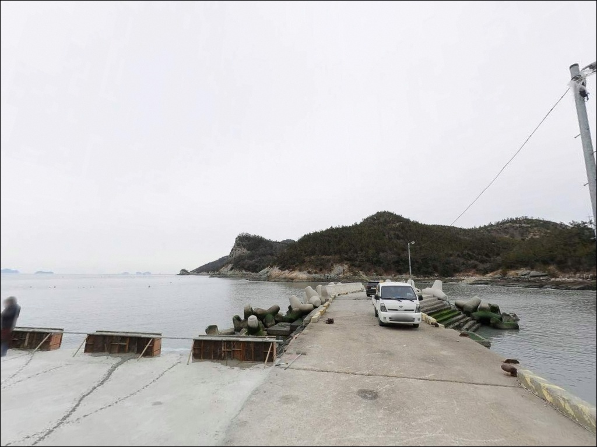
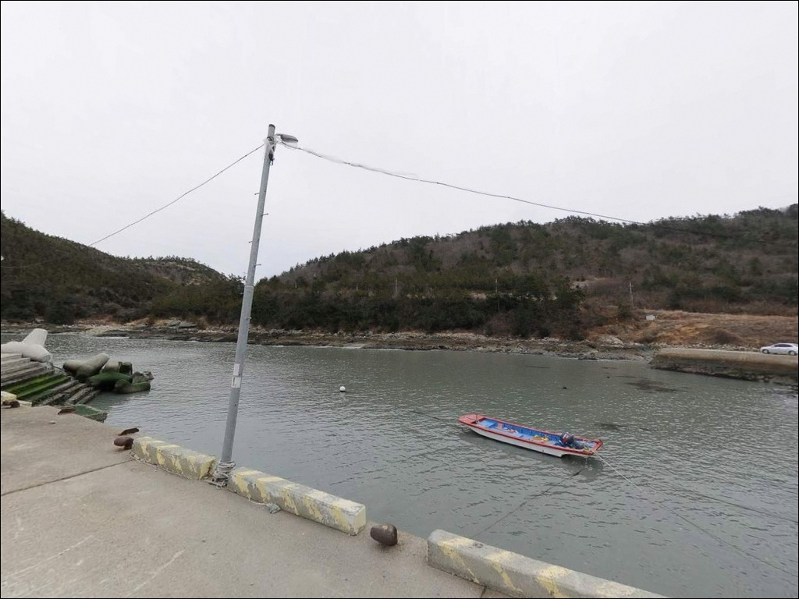
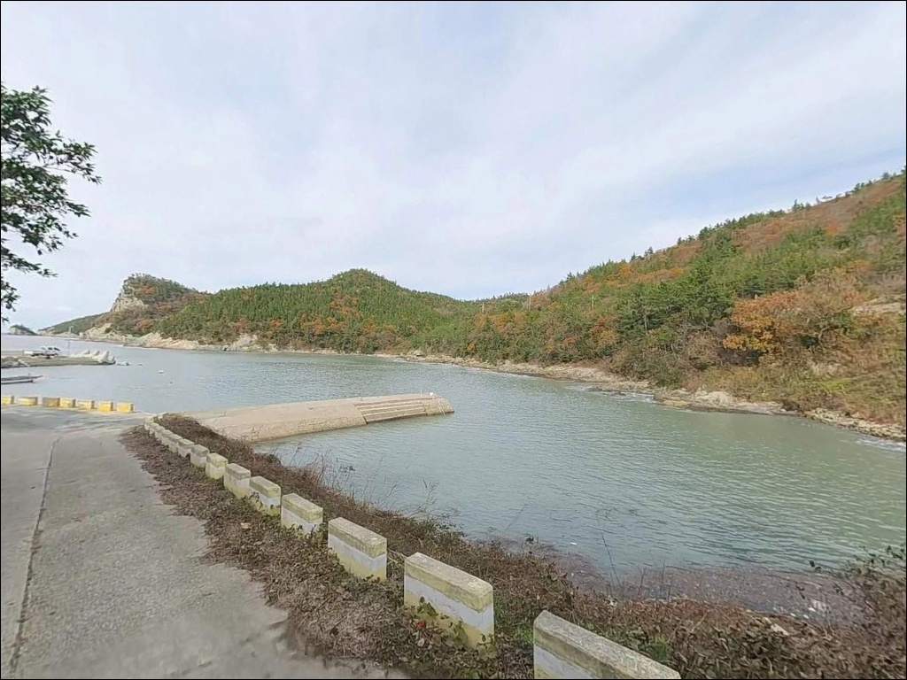

심동리 선착장, 진도 전남 진도군 자연 그대로의 분위기에서 차박, 낚시를 즐기기 좋은 포인트
이 페이지에는 광고(제휴 링크 포함)가 있으며, 광고 링크를 통해 구매하면 운영자가 판매 수익 또는 수수료를 받을 수 있습니다. 포인트 사진: 카카오맵 스카이뷰·로드뷰. 이 페이지의 지도·사진 이미지는 카카오맵의 실제 서비스 이미지와 다를 수 있습니다.


포인트 안내
심동리 선착장
전남 진도군 지산면 심동리 435-8
물때 확인 없이 진도 서남부 선착장을 찾으면,
간조 때 드러나는 얕은 수심이
낚시 여건 자체를 없애버립니다.
심동리 선착장은 조수간만의 차가 큰 해역에 위치해 있어,
물때에 따라 포인트 여건이 완전히 달라지는 구조입니다.
이 글은 심동리 선착장의
진입 환경, 지형 조건, 낚시 방식 적합성에 집중합니다.
조황 단정이나 특정 어종 보장은
이 글의 범위에 포함되지 않습니다.

1. 진입 동선과 포인트 접근성
심동리는 진도 본섬 안에 위치하며,
진도대교를 통해 육지에서 차량으로 접근 가능합니다.
지산면 내부 도로를 따라 해안 방향으로 이동하는 경로로,
마을 안길을 거쳐 선착장까지 이어지는 구조입니다.
진입로는 폭이 좁은 구간이 포함되어 있어
소형~중형 차량이 현실적인 기준입니다.
대형 SUV나 캠핑 장비를 갖춘 차량이라면
출발 전 위성지도로 진입 경로를 먼저 확인하고 가는 편이 좋습니다.
선착장 인근 회차 공간이 넉넉하지 않은 소형 포구 구조이므로,
후진 진출이 어려운 차량은
선착장 입구 전 평탄한 공간에 미리 주차하는 방식이 현실적입니다.
선착장 접안 구역은 어업 활동 공간으로 활용됩니다.
어선 출입 동선과 계류 로프 근처를 피해
자리를 잡는 것이 기본 매너입니다.

2. 차박 환경과 야간 체류 여건
지산면 심동리는 민가 밀집도가 낮은 소규모 어촌 마을입니다.
야간에는 통행 차량이 거의 없고
주변이 조용한 환경이어서
프라이버시 측면에서는 나쁘지 않은 여건입니다.
다만 가로등이 드문 편으로,
야간 이동과 낚시 준비 모두 개인 조명이 필수입니다.
진도 서남부 해안 특성상
서풍이 강한 날에는 외항 방향에서 바람 영향을 직접 받는 구조입니다.
기상 예보 확인은 출발 전 필수 단계입니다.
주차 공간이 넉넉하지 않은 소형 선착장 구조상,
차박을 메인 목적으로 삼기에는 공간 여건이 제한적인 편입니다.
낚시 후 잠시 대기하거나 이른 새벽 출조를 위해
하룻밤 머무는 보조 용도로는 고려해볼 수 있습니다.
차박 단독 목적이라면 공간 여유가 있는 대안 포인트를
함께 파악해두는 편이 좋습니다.


3. 주변 편의시설 및 인프라 현황
심동리 선착장 반경 3km 이내에서
확인된 편의점이나 마트는 없습니다.
지산면 소재지 방향인 인지리 일대까지 이동하면
CU 편의점과 SK주유소를 이용할 수 있습니다.
식수, 얼음, 낚시 소품, 연료는 출발 전 완전히 갖추고
진입하는 것이 유일한 현실적 준비 방식입니다.
응급 상황 발생 시 진도읍 방향까지 이동 거리가 상당합니다.
비상약품과 통신 환경 확인도
방문 전 점검 항목에 포함하는 편이 좋습니다.

4. 조류와 물때 — 방문 전 반드시 확인해야 할 조건
심동리 방문 전 가장 먼저 확인할 것은 물때입니다.
진도 해역은 조수간만의 차가 크기로 알려진 서해 남부 구역으로,
간조 전후에는 수심이 급격히 얕아지는 구조입니다.
바다타임에서 지산면 기준 물때를 확인하고
중들물 이후 시간대를 노리는 것이 기본 전략입니다.
진도 해역은 조수간만의 차가 크고 조류가 빠른 편이어서,
물때를 맞추지 않으면 어떤 채비도 제 역할을 하기 어렵습니다.
사리 전후에는 조류가 거세져 채비 컨트롤이 어려워지므로,
조금 전후 또는 정조 타이밍 전후를 기준으로
출발 시각을 조정하는 것이 이 포인트 공략의 핵심입니다.
섬 지역 특성상 기상 변화가 빠릅니다.
당일 아침 해상 기상 예보를 한 번 더 확인하고 출발하는 것이
포인트 낭비를 막는 조건입니다.
야간에는 구명조끼와 헤드랜턴을 반드시 착용해야 하며,
진도 해역 특성상 조류 방향 변화에 따른 고립 위험도
사전에 파악해두는 편이 안전합니다.

5. 지형 기반 낚시 여건 분석
심동리 선착장은 진도 서남부 다도해 해역을 향해 열린 구조로,
주변 섬들이 일부 파도를 차단하는 배치입니다.
선착장 끝단은 외항 방향으로 조류 흐름이 직접 닿는 자리이며,
수심이 상대적으로 깊어지는 구간에 해당합니다.
선착장 좌우 해안선은 암반과 뻘이 혼합된 지형으로,
낚시 스타일에 따라 자리 선택의 폭이 있습니다.
진도 해역은 조류가 빠르기로 알려진 곳입니다.
심동리 선착장도 사리 전후에는 조류가 거세어
채비 컨트롤이 어려워지는 상황이 생깁니다.
중들물에서 날물 초입으로 전환되는 타이밍이
이 포인트에서 낚시 여건이 살아나는 시점입니다.
심동리 선착장은 온라인 낚시 기록이 거의 남아 있지 않은
무명 소형 포인트입니다.
이 일대 해역의 지형 특성을 바탕으로
낚시 가능성을 판단하는 수준이며,
출조 전에 "진도 지산면 낚시" 또는
"진도 서남부 방파제 조황"으로
최신 현장 정보를 꼭 검색해보시기 바랍니다.


6. 포인트에 어울리는 낚시 스타일
이 포인트에서 기본이 되는 낚시는 원투낚시입니다.
선착장 끝단에서 외항 방향으로 채비를 던져
바닥층을 탐색하는 방식이 이 지형 구조에 잘 맞습니다.
진도 해역 특성상 도다리, 붕장어, 노래미 계열을
기대해볼 수 있는 방식이며,
정조 전후 조류가 잦아드는 타이밍이
원투낚시 효율이 가장 높은 시점입니다.
찌낚시도 이 포인트 구조에 맞는 스타일입니다.
중들물 이후 외항 방향으로 조류가 흐를 때,
흘림 찌낚시 방식으로 조류를 타는 자리를 만들 수 있습니다.
진도 지역은 감성돔 찌낚시 포인트가
해안선 곳곳에 발달해 있는 곳이어서,
선착장 주변 암반 경계 구간이 주목할 만한 자리입니다.
루어낚시는 선착장 인근 암반 지형이 확인될 경우
노려볼 수 있는 방식입니다.
볼락 라이트게임은 야간에 암초 경계선을 따라
소형 지그헤드 채비로 접근하는 방식이 기본입니다.
농어 루어는 5~10월 시즌에
선착장 주변 굴곡 지형을 따라 공략하는 방식으로
시도해볼 여지가 있는 스타일입니다.

7. 대안 포인트와 플랜 B 동선
심동리 선착장이 여의치 않을 때
가장 먼저 고려할 대안은 서망항입니다.
진도 임회면에 위치한 서망항은
연안 방파제 낚시 포인트로 알려진 곳으로,
선상 낚시 출조도 운영되는 진도 서남부 낚시 거점입니다.
구조가 뚜렷하고 포인트 다양성이 갖춰진 곳이어서
심동리 초행길에 거점으로 삼기에 적합합니다.
접도 수품항 방파제도 대안으로 고려할 만한 곳입니다.
수심이 6m에서 최대 10m 안팎으로 일정한 편이며,
신방파제 초입부와 구방파제 끝부분이
인기 자리로 알려져 있습니다.
사계절 낚시가 가능한 구조이므로
심동리 방문 전후로 묶어서
하나의 동선으로 운영하기에 효율적인 포인트입니다.
인근에는 가학리 선착장도 있습니다.
심동리보다 규모가 있는 포인트로 알려져 있어,
조황 여건이 맞지 않을 때
이동 시간이 짧게 해결되는 대안입니다.

물때를 알면 심동리 선착장이
다르게 보입니다
원투낚시나 찌낚시를 즐기면서
사람 없는 조용한 포인트를 찾는 낚시인이라면
심동리 선착장은 한번 직접 답사해볼 만한 곳입니다.
온라인 기록이 거의 없다는 것은
그만큼 발품이 필요하다는 의미이기도 하고,
아직 자리가 남아 있는 포인트라는 의미이기도 합니다.
다만 물때 파악 없이 찾아가거나
자급 준비 없이 소형 마을 선착장을 방문하면
포인트를 제대로 경험하지 못하는 결과로 이어집니다.
물때 확인, 위성지도 진입로 파악, 완전 자급 준비,
이 세 가지를 갖추고 간다면
조용하고 한적한 하루를 보낼 수 있는 곳입니다.
낚시를 마치고 바람 잔잔한 날
진도 서남부 해안선 옆에서 하룻밤 머무는 차박 여행자라면,
국립공원 야영 구역 포함 여부와 주차 여건을
출발 전 확인해두는 것만으로
낚시와 차박을 함께 즐길 수 있는 조용한 출조가 됩니다.